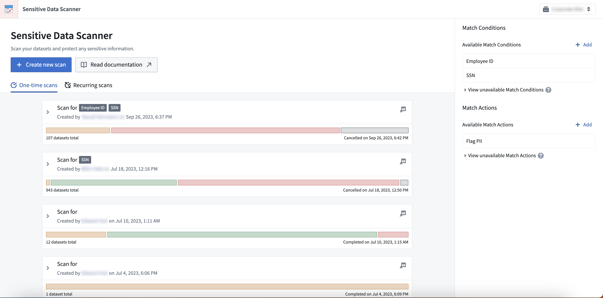
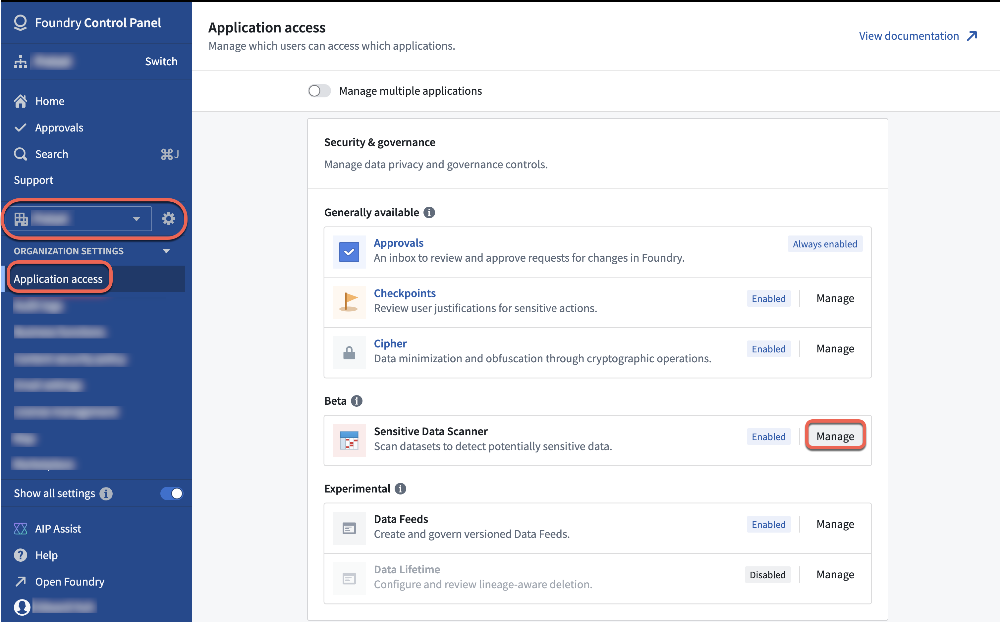

Sensitive Data Scanner (SDS, formerly known as "Foundry Inference") helps organizations discover and secure sensitive data within Foundry. Governance users can use SDS to specify patterns of sensitive data to identify, along with the appropriate automated action to take when such sensitive data is found.

Based on these instructions, Sensitive Data Scanner can either run a one-time scan or scheduled recurring scans across all specified datasets. Sensitive Data Scanner gives governance users powerful insight and control over their data in Foundry and simplifies compliance with data protection regulations across the world.
We recommend new users review the core concepts for Sensitive Data Scanner and the instructions on how to create a Sensitive Data Scan. Review the SDS best practices guide to reduce scan compute time, boost workflow efficiency, and manage user interactions based on resource permissions.
:::callout{theme="neutral"} For other functionality in Foundry that can help your organization comply with GDPR, CCPA, LGPD and other privacy laws, see our page on data protection and governance. :::
Sensitive Data Scanner may not be enabled by default on your enrollment. To enable the feature, follow the instructions below:
